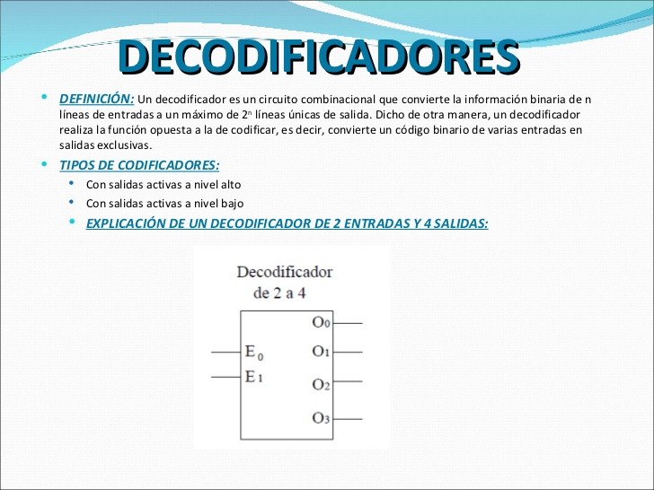
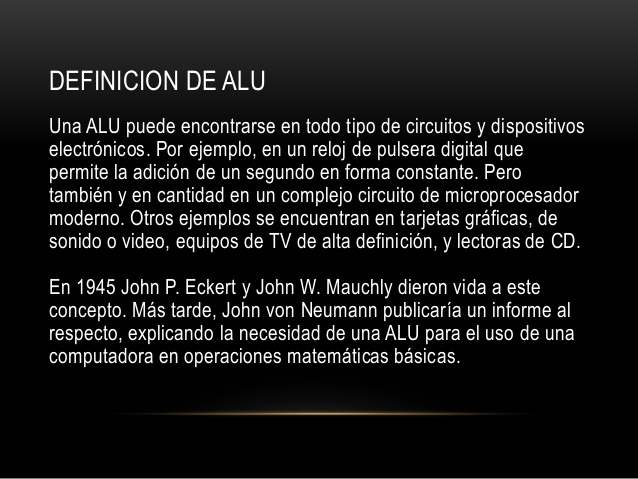

INVESTIGACIONES
_______________________________________________________________________________________________________________________________________________________________________________

Decodificador de 2 a 4 líneas.
Tabla de verdad para el decodificador de 2 a 4 líneas
Entradas Salidas
A1 A0 D3 D2 D1 D0
0 0 0 0 0 1
0 1 0 0 1 0
1 0 0 1 0 0
1 1 1 0 0 0
Un tipo de decodificador muy empleado es el de siete segmentos. Este circuito decodifica la información de entrada en BCD a un código de siete segmentos adecuado para que se muestre en un visualizador de siete segmentos.
Aplicaciones del Decodificador
Su función principal es la de direccionar espacios de memoria. Un decodificador de N < es capaz de direccionar 2N espacios de memoria.
Para poder direccionar 1Kib de memoria se necesitarían 10 bits, ya que la cantidad de salidas seria 210, igual a 1024.
De esta manera:
Con 20 bits se tienen 220 lo que equivale a 1Mib.
Con 30 bits se tienen 230 lo que equivale a 1Gib.
////ALU\\\\

Definimos genéricamente a la unidad ALU (por sus siglas en inglés Arithmetic Logic Unit) como una de las unidades que forman parte de la Unidad Central de Procesos (es decir, del Procesador, Microprocesador o CPU - Central Processor Unit, por sus siglas en inglés) mediante la cual es posible realizar una gran cantidad de operaciones aritméticas básicas (Suma, Resta, División y Multiplicación)
además de realizar algunas operaciones Lógicas (Yes, Or, Not, And - Es decir, si; y, o, no) entre dos números o dos conjuntos de números.
REGRESAR